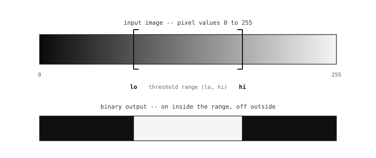

5.12. 이진 임계값 처리¶
많은 이미지 처리 파이프라인은 결국 각 픽셀에 대한 질문으로 귀결됩니다. 이 밝기가 “전경”을 의미하는 범위 안에 있는가? 이 색상이 애플리케이션이 추적 중인 마커가 될 만큼 빨강에 충분히 가까운가? 이 픽셀이 파이프라인의 다음 단계가 살펴봐야 할 후보 집합의 일부인가? 임계값 처리는 이러한 질문들을 모든 위치에서 이진 답 – 픽셀이 일치하면 켜짐, 그렇지 않으면 꺼짐 – 으로 바꾸고, 전체 이미지를 파이프라인의 나머지가 작업할 수 있는 마스크로 축소하는 연산입니다.
5.12.1. binary 메서드¶
binary() 메서드는 그 분류를 한 번의 호출로 모든 픽셀에 걸쳐 실행합니다. 이 메서드는 임계값 범위의 목록 – 픽셀이 “켜짐”으로 간주되기 위해 일치할 수 있는 조건들 – 을 받아, 적어도 하나의 범위에 일치한 모든 픽셀은 포맷의 최댓값으로 설정하고 일치하지 않은 모든 픽셀은 0으로 설정하도록 이미지를 다시 씁니다. 그 결과가 파이프라인의 나머지가 직접 사용할 수 있는 이진 마스크입니다.
가장 단순한 형태에서는 임계값 목록에 하나의 범위가 있고 호출은 그 범위 안의 픽셀로 이루어진 마스크를 반환합니다:
img.binary([(120, 255)])
목록 형태가 binary 를 강력하게 만드는 요소입니다. 두 개의 색상 마커를 추적하거나, 밝기 범위와 고립된 채도 피크를 함께 추적하려는 파이프라인은 두 범위를 같은 목록에 전달하여 모든 일치를 포괄하는 단일 출력 마스크를 얻습니다.

임계값 처리는 연속 값을 가진 이미지를 이진 마스크로 바꿉니다. 임계값 범위 안의 모든 픽셀은 포맷의 최댓값이 되고, 범위 밖의 모든 픽셀은 0이 됩니다.¶
5.12.2. 그레이스케일 튜플¶
그레이스케일 이미지의 경우, 임계값 목록의 각 항목은 포함적 밝기 범위를 설명하는 두 요소 튜플 (lo, hi) 입니다. lo 와 hi 사이(포함)의 값을 가진 픽셀은 일치하고, 그 범위 밖의 모든 것은 일치하지 않습니다. 자연스러운 패턴은 간단합니다:
(0, 60)은 어두운 픽셀에 일치합니다 – 검정부터 진한 회색까지 모두.(180, 255)는 밝은 픽셀에 일치합니다 – 밝은 회색부터 흰색까지 모두.(100, 160)은 중간 회색 픽셀에 일치합니다 – 밝기 범위의 중간 대역.
튜플 안의 두 값의 순서는 중요하지 않습니다. lo 가 hi 보다 크면 메서드가 내부적으로 둘을 교환하므로, (60, 0) 은 (0, 60) 과 동일하게 동작합니다.
5.12.3. 색상을 위한 LAB 튜플¶
RGB565 이미지의 경우, 각 항목은 빨강, 초록, 파랑에서 직접이 아니라 LAB 색 공간에서의 포함적 범위를 설명하는 여섯 요소 튜플 (l_lo, l_hi, a_lo, a_hi, b_lo, b_hi) 입니다. 임계값은 L(밝기), A(초록-빨강 색도 축), B(파랑-노랑 색도 축)이며, 각각 해당 채널의 픽셀 값과 비교됩니다.
RGB를 직접 임계값 처리하지 않고 LAB를 거치는 이유는 LAB 색 공간이 설계의 중심으로 삼은 속성, 즉 LAB는 밝기를 색도와 분리한다는 점입니다. 같은 색상을 다른 밝기로 나타내는 두 픽셀은 서로 다른 L 값을 갖지만 대략 같은 A와 B 값을 갖게 됩니다. 그 분리 덕분에 임계값 범위는 A와 B 축에서의 위치로 색상을 설명하면서, L 범위는 넓게 열어 두어 그림자부터 하이라이트까지 모든 밝기에서 그 색상을 받아들일 수 있습니다. RGB 기반 임계값으로는 그렇게 할 수 없습니다 – 조명의 어떤 변화든 R, G, B 세 값을 한꺼번에 움직이게 하므로, RGB 임계값으로 만든 추적기는 구름이 해를 처음 지나가는 순간 무너집니다.
실용적인 패턴: 애플리케이션이 추적 중인 색상을 설명하는 A와 B 범위를 고르고, L 범위는 넓게 – 어떤 밝기든 받아들이도록 종종 (0, 100) 으로 – 둡니다. 애플리케이션이 색상뿐 아니라 밝기에 대해서도 명시적으로 임계값 처리를 원하는 경우가 아니라면 말입니다.
여섯 개보다 적은 값을 가진 튜플의 경우, 누락된 구성 요소는 최대 범위(해당 축에 제약 없음)로 기본 설정됩니다. 따라서 RGB565 임계값 목록 안의 두 요소 (l_lo, l_hi) 튜플은 밝기에 대해서만 임계값 처리하고 모든 색상에 일치합니다.
참고
진정으로 넓게 열린 L 범위는 아래쪽 끝에 함정이 있습니다. 밝기가 0을 향해 떨어지면 모든 색상이 검정으로 수렴하며, A와 B 값은 0을 향해 붕괴하고 노이즈가 지배하게 됩니다 – 따라서 어두운 픽셀이 A와 B 범위로 흘러 들어가 목표 색상으로 추적될 수 있습니다. 장면의 검은 영역이 일치로 떠오른다면, 그것들이 빠질 때까지 l_lo 를 올리십시오.
5.12.4. 플래그¶
세 개의 키워드 인자가 출력을 제어합니다:
invert=True는 결과를 뒤집습니다. 일치했을 모든 픽셀은 0이 되고, 0이었을 모든 픽셀은 최댓값이 됩니다. 전경을 아닌 것으로 설명하는 것이 자연스러운 경우에 유용합니다.zero=True는 동작 모드를 바꿉니다. 일치하는 픽셀은 0이 되고 일치하지 않는 픽셀은 원래 값을 유지합니다. 이미지를 일치 픽셀의 이진 마스크로 축소하는 대신 일치하는 픽셀을 이미지에서 지우는 것이 목표일 때 사용하십시오.to_bitmap=True는 소스의 기존 포맷을 덮어쓰는 대신 결과를BINARY이미지로 반환합니다. 픽셀당 1비트 결과는 이후의 마스크 인자가 직접 받아들이는 형태이며, 이 변환은 종종 전체 포맷 마스크를 들고 다니는 메모리 부담을 덜어줍니다.
마스크와 ROI는 이 인터페이스의 나머지와 동일한 관례를 따릅니다. roi 직사각형은 연산을 하위 영역으로 범위 지정하고, mask 이미지는 임의의 위치 패턴으로 범위 지정합니다.
5.12.5. 기본적으로 제자리에서¶
산술 연산과 마찬가지로 binary 는 기본적으로 제자리에서 실행됩니다. 소스 이미지의 픽셀이 이진 출력으로 덮어써지며, 원래 값은 호출 후 사라집니다. to_bitmap=True 형태는 소스를 보존해야 하고 출력이 새로 할당된 BINARY 이미지여야 할 때의 대안입니다. copy=True 형태도 새 버퍼에 같은 포맷의 결과를 얻기 위해 허용됩니다.